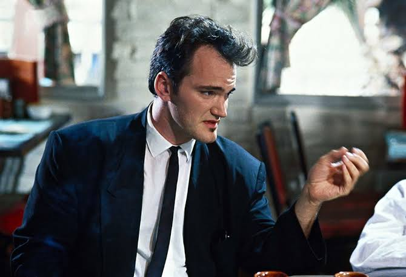
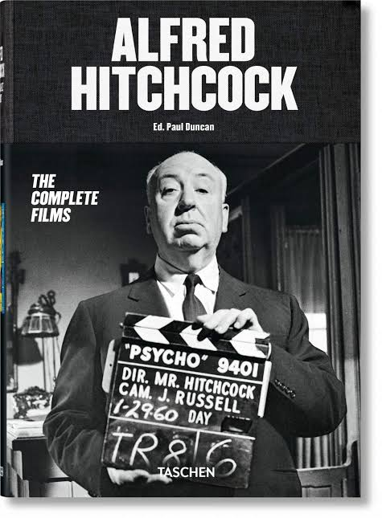
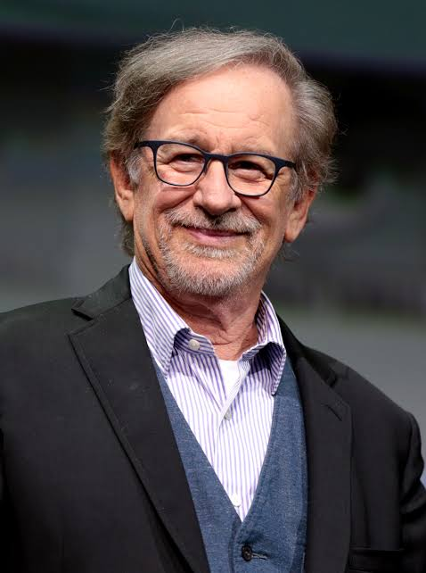

Diretores
Top 3 Diretores
escolhidos exclusivamente pela cabeça genial do Artur :)
O que seria de um ônibus sem seu
motorista? Ou um avião? Um trem? Isso mesmo, diretores
são como motoristas de um automóvel em movimento, com a única diferença de que o automóvel são pessoas, meio
teimosas, mas qual a diferença, não é mesmo? Aqui
listaremos top 3 diretores mais aclamados do cinema!
Tarantino
Quentin Tarantino, um dos mais famosos (se não, o) diretores do cinema. Responsável por obras como Django Livre, Kill Bill, Pulp Fiction (seu filme mais famoso e aquele que o concretizou de vez como diretor repeitado). Ele nasceu em 1963 e a ntes de ingressar no cinema, trabalhou numa locadora, o que influenciou bastante seu amor pelo cinema. Iniciou sua carreira com o filme "Cães de Aluguel", de 1992 (filmaço!), e logo depois dirigiu e escreveu Pull Fiction.
Hitchcock
Nascido em 1899, Alfred Hitchcock foi um grandíssimo diretor de cinema, criado em um a rígida formação católica. Em 1920 começou a trabalhar com cinema, durante essa época ele aprendeu a roteirizar, editar e também direção de arte. Já em 22 se tornou assistente de direção. Hitchcock é conhecido por ser um diretor muito polêmico. Por exemplo, no filme "Os Pássaros", de 1963, em uma determinada cena, A lfred prendeu a atriz principal numa sala cheia de corvos apenas para a gravação do filme. Outro exemplo, ele tem várias acusações de assédio sexual. Seu filme mais famoso é "Psicose", de 1960. Hitchcock morreu em 29 de abril de 1980.
Spielberg
Um dos melhores diretores de todos os tempos, Stephen Spielberg nasceu em 1946, dono de três Oscar, dois de melhor diretor e um de melhor filme. Spielberg é conhecido por revolucionar o cinema diversas vezes, como, por exemplo, com os clássicos filmes "Jurassic Park", de 1993, "Tubarão", de 1975 (um dos primeiros blockbusters da história), e, talvez seu melhor filme, "A Lista de Schindler", d e 1993, que lhe rendeu dois Oscars. Excelente diretor!